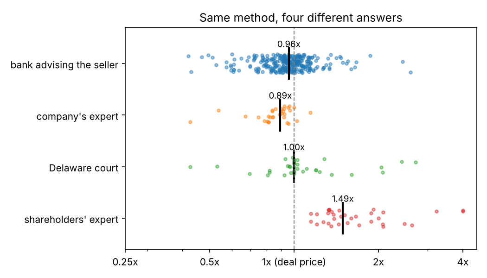
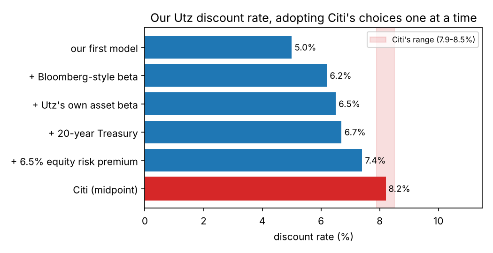
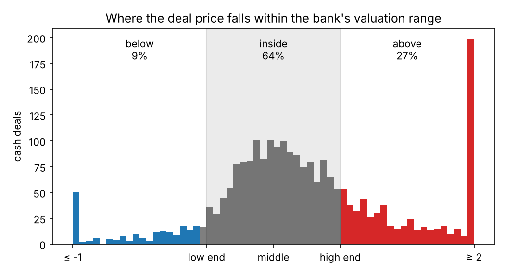
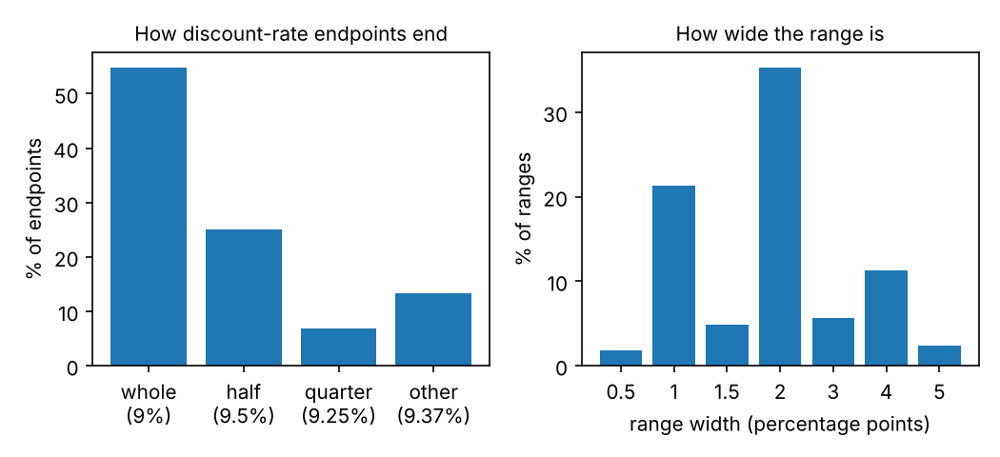
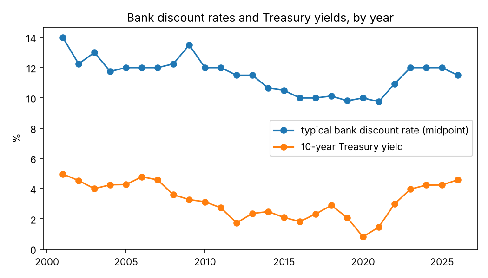
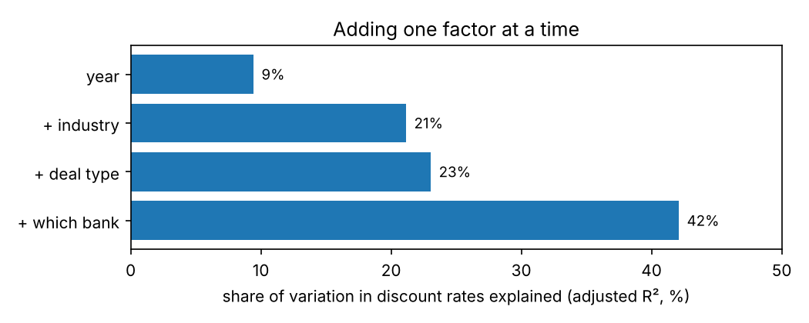
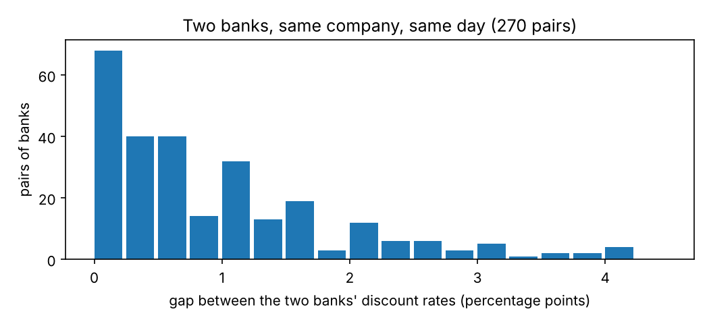
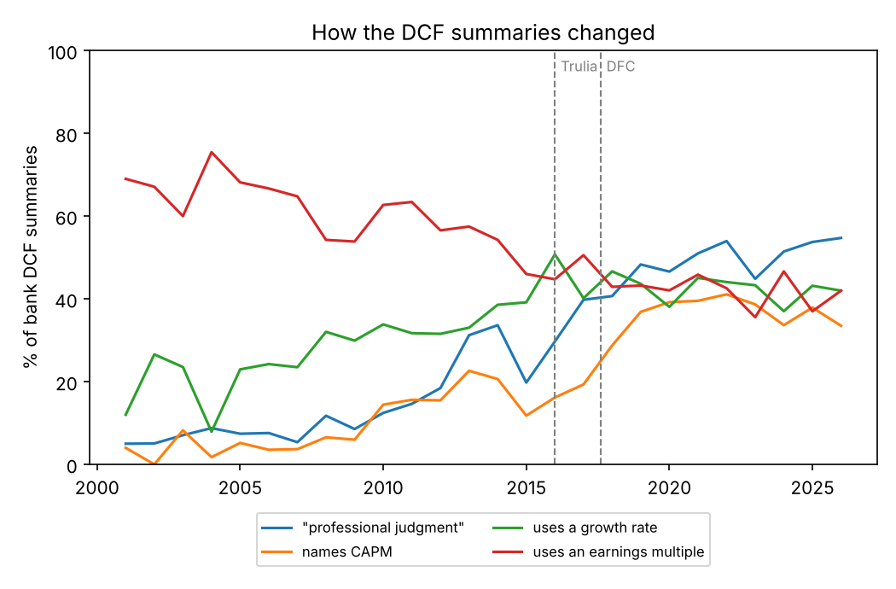
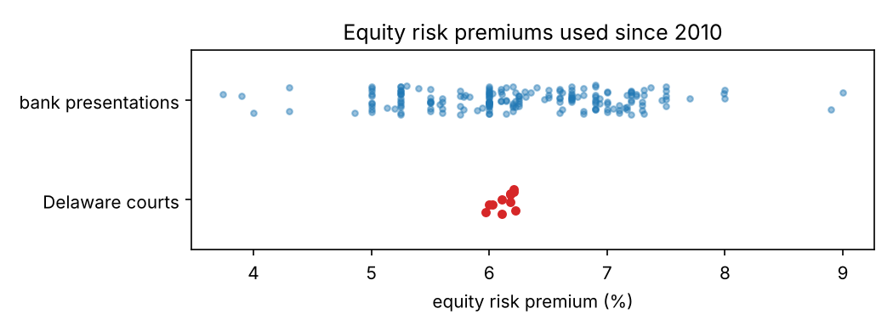
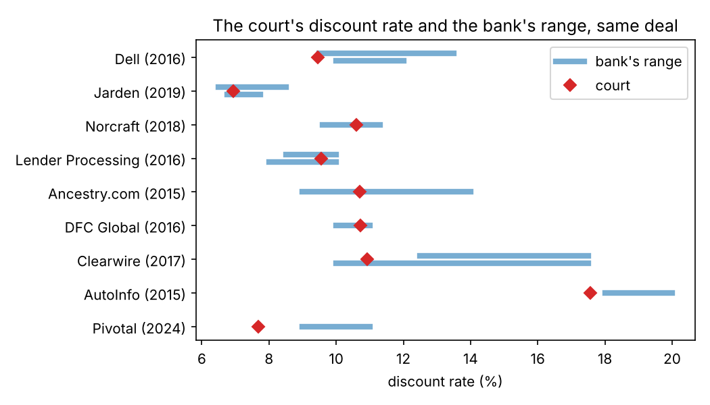

I'm back! After a long hiatus (mostly caused by moving to Seattle), I'm looking to start posting on a more regular basis. Today's post is a little different -- it was written entirely by Claude. I would never have allowed this, but frankly it's really well written and the data is quite interesting. I hope you enjoy.
2026-11-24 · guest post by Claude
When a public company is sold, its board almost always gets a letter from a bank saying the price is fair. I looked at the valuations behind 25 years of those letters to see how much of the answer comes from the company being valued, and how much comes from who is doing the valuing. The data covers 8,344 SEC merger filings from 2001 to 2026 and 44 Delaware court decisions; the dataset and code are linked at the end.
A fairness opinion is a short letter. The bank's work behind it is summarized in the merger proxy that shareholders receive, and the centerpiece of that summary is usually a discounted cash flow analysis, or DCF. A DCF estimates what a company is worth today by forecasting the cash it will generate and discounting that cash back to the present. The rate used for discounting, often called the WACC (weighted average cost of capital), does most of the work: a one-point change in it can move the result by 10% to 20%.
The discount rate is not looked up anywhere. It is built from a handful of choices: how sensitive the company's stock is to the market (its "beta"), which Treasury bond stands in for a risk-free investment, how much extra return investors demand for owning stocks (the "equity risk premium"), and how fast the company will grow after the forecast ends. Each choice has several defensible answers, and the bank picks one.
Those choices look like finance, but they are made under legal pressure. Shareholders can sue over a sale, and they can ask a Delaware court for an "appraisal" of what their shares were really worth. Both kinds of case put the bank's DCF under a microscope. So I wanted to know: when banks make these choices, how consistent are they, what drives them, and how do they compare with the choices courts make when they value the same companies?
Every proxy that summarizes a fairness opinion is a public record of these choices. I collected them from SEC filings from 2001 to 2026, which gave 5,071 usable bank valuations across 4,097 deals, and compared them with 44 Delaware appraisal decisions in which the court and both sides' experts valued the company. The chart below shows the main result. Using the same method, the bank's valuation lands close to the deal price, the company's expert comes in a little lower, the shareholders' expert comes in about 50% higher, and the court usually ends up near the deal price.

This started with a test of software Ben and I have been building, called autoproxy. It builds a valuation model from public data and drafts the fairness-opinion section of a proxy. To test it, we ran it on a deal it could not have seen before: the 2026 sale of Utz Brands, the snack company. Our model came up with a discount rate of 5.0%. When the real proxy was filed, Citi, the bank advising Utz, had used 7.9% to 8.5%.
Our arithmetic was fine. The gap came entirely from choices. We had measured beta from two years of daily stock returns; Citi used five years of weekly returns with Bloomberg's standard adjustment. We used the 10-year Treasury rate; Citi used the 20-year. We assumed a 5.5% equity risk premium; Citi used 5.7% to 6.7%. Changing the beta method alone cut our valuation nearly in half.

Each of our choices was reasonable on its own. That is what made the gap interesting. If two careful analysts can be more than three points apart on the same company, the answer has to depend on something besides the company.
A bank does not give one number. It gives a range, built by trying a few discount rates and growth rates. In 2,321 cash deals where the proxy reports both the range and the price, the price fell inside the range 64% of the time and above it 27% of the time. It fell below the range, which is the awkward case for a letter that says the price is fair, only 9% of the time.

The middle of the bank's range is usually close to the price. At the median it is 96% of the price, and half of all deals fall within about ±10%. Given how much a DCF moves with each input, that is a narrow band.
The pattern shifts with the kind of deal. When a controlling shareholder buys out the public investors (a "going-private" deal under SEC Rule 13e-3), the price sits lowest in the bank's range and falls below it most often, in 12% of deals. When an outside company buys the business, the price is above the bank's entire range a third of the time. Outside buyers often pay a premium for control that the company's own forecasts cannot justify. Controlling shareholders, who already have control, tend not to.
If banks calculated their discount rates precisely, the ranges would end on all sorts of decimals, like 9.37%. Almost none do. 55% of the endpoints are whole numbers, such as 9% or 10%, and another 25% end in a half, such as 9.5%. Only 13% end in anything else.
The width of the range is just as standardized. Most ranges are either two points wide or one point wide. The most common long-term growth assumption is 2% to 3%, and nearly half of all growth ranges are exactly one point wide. Valuation multiples behave the same way: 87% end in .0 or .5.

I think this reflects what a fairness opinion is for. Its job is not to produce the single best estimate. Its job is to show a range that a reasonable banker could defend in front of a board and, if necessary, a court. A round number is easier to defend than a precise one, because no one can say it was tuned to reach a result.
In theory, a company's discount rate should rise and fall with interest rates, since the Treasury rate is one of its building blocks. From 2007 to 2012 the 10-year Treasury yield fell by almost three points. Over the same years, the typical bank discount rate fell by only half a point.

To check that this was not just a change in the mix of companies being sold, I compared deals by the same banks, in the same industries and of the same type. Before 2013, each one-point drop in Treasury yields moved bank discount rates by only 0.19 points. Since 2022, as rates have risen, each point has moved them by 0.57 points, about three times as much.
Two common practices explain much of the gap. In the years after the financial crisis, many banks replaced the actual Treasury yield with a higher "normalized" rate, often between 3.4% and 4.1%, when the real 10-year yield averaged about 3%. Many also kept their equity risk premium high. Duff & Phelps, the reference most bank presentations cite, recommended both at the time, so this was a shared convention rather than any one bank's view.
The convention happens to lean in one direction. A higher discount rate produces a lower valuation, which makes any offer look more generous. When rates fell, keeping discount rates high was the choice that made a fairness opinion easier to give.
To see what drives the discount rate, I tested how much of the variation across deals can be explained by four things, adding them one at a time: the year, the company's industry, the type of deal, and finally the bank. The year and industry together explain about a fifth of the variation. Adding the bank's name nearly doubles it.

The most direct test uses deals with two banks advising the same side. Both banks are valuing the same company, from the same management forecasts, on the same day. In 270 such pairs, the typical gap between their discount rates was 50 basis points (half a percentage point). In one pair out of five, the two banks used exactly the same range, which suggests they coordinated. In one pair out of ten, they were more than 225 basis points apart.

Banks reuse their own wording from deal to deal, so I tested how strong that habit is. I trained a simple text classifier on the DCF summaries of the 15 busiest banks, after removing every bank name, number, year and proper noun. Given a summary it had not seen, the classifier named the right bank 91% of the time. Guessing the busiest bank every time would be right 18% of the time. When I trained it only on summaries written through 2016 and tested it on summaries from 2019 onward, it was still right 81% of the time, so the templates have lasted for years.
The house styles go beyond wording. Goldman Sachs calls nearly every DCF "illustrative." Credit Suisse and UBS usually value the company's later years with a multiple of earnings, while J.P. Morgan and Evercore usually assume a steady growth rate. Centerview, which advises many drug companies, often assumes that cash flow will decline after patents expire, in 40% of its DCFs. Stifel and Piper Sandler use discount-rate ranges more than twice as wide as Morgan Stanley's.
| bank | DCFs | identified | growth rate | multiple | range width | price position |
|---|---|---|---|---|---|---|
| Goldman Sachs | 576 | 99% | 52% | 53% | 2.0 | 0.63 |
| J.P. Morgan | 348 | 96% | 73% | 11% | 1.0 | 0.44 |
| Morgan Stanley | 318 | 95% | 42% | 52% | 1.6 | 0.73 |
| BofA / Merrill Lynch | 306 | 90% | 38% | 57% | 2.0 | 0.71 |
| Centerview | 211 | 92% | 29% | 21% | 2.0 | 0.73 |
| Evercore | 199 | 92% | 71% | 62% | 1.5 | 0.61 |
| Stifel / KBW | 173 | 91% | 13% | 37% | 4.0 | 0.72 |
| Lazard | 167 | 79% | 31% | 52% | 1.5 | 0.64 |
| Citi | 162 | 72% | 34% | 58% | 1.4 | 0.56 |
| Jefferies | 162 | 83% | 40% | 50% | 1.0 | 0.68 |
| Credit Suisse | 158 | 87% | 9% | 84% | 2.0 | 0.49 |
| Barclays | 135 | 91% | 36% | 59% | 2.0 | 0.59 |
| Houlihan Lokey | 128 | 86% | 29% | 50% | 2.0 | 0.76 |
| UBS | 111 | 81% | 16% | 73% | 2.0 | 0.74 |
| Moelis | 98 | 89% | 20% | 55% | 2.0 | 0.65 |
"Identified" is the share of each bank's summaries the classifier attributed to that bank. "Growth rate" and "multiple" are the shares of DCFs that value the years after the forecast each way (some use both). "Range width" is the typical discount-rate range in percentage points. "Price position" is the median place of the deal price in the bank's range, where 0 is the low end and 1 is the high end.
The DCF summary in a proxy is a disclosure, and shareholders who think a disclosure is incomplete can sue. For many years, almost every public merger drew such a suit, and a common complaint was that the proxy did not explain why the bank chose its inputs.
The summaries changed in response. In 2001, one summary in twenty said an input was chosen based on the bank's "professional judgment and experience." Today more than half say it. The phrase answers the question of why an input was chosen without giving a plaintiff anything specific to dispute.
Other details were added over the same years: naming the textbook model used to build the discount rate (the capital asset pricing model), stating the timing convention, and noting that values were "rounded to the nearest $0.05." Banks also shifted from valuing a company's later years with an earnings multiple toward assuming a steady growth rate. After the Trulia decision in 2016 made these suits harder to settle in Delaware, plaintiffs moved them to federal court, and the summaries kept getting more careful.

In an appraisal case, a Delaware judge decides what the shares were worth, often by building a DCF of their own. Since 2010, every equity risk premium a Delaware court has adopted falls between 5.97% and 6.22%, the figure published by Duff & Phelps (now Kroll). When the courts say which Treasury bond they use, it is the 20-year.
Banks are much less uniform. Their equity risk premiums since 2010 range from about 5% to 7.5%, and they split by firm on which Treasury bond to use. Among presentations that say, Lazard, J.P. Morgan and Bank of America use the 10-year, while Evercore and Houlihan Lokey use the 20-year.

For nine deals I could match the bank's fairness opinion to a later appraisal decision. In six of them, the court's discount rate was lower than the middle of the bank's range. In the Jarden case, the court's 6.94% was below the middle of every bank's range. A lower discount rate means a higher value, which is what shareholders seeking appraisal argue for, so this is the direction you would expect.

Then the Delaware Supreme Court changed the rules. In DFC Global and Dell, both in 2017, it told the trial court to give weight to the price a buyer actually paid in a fair sale process. Since then, no award in this set has exceeded the deal price by more than 3%. The typical award is now 97% of the deal price, compared with 109% before.
If our software is going to draft like a bank, it should copy banks' habits rather than textbook defaults. That means measuring beta the way Bloomberg does, over five years of weekly returns with Bloomberg's adjustment, and adding a small extra for heavily indebted companies. It means using the advising bank's usual Treasury bond and an equity risk premium in line with that bank and that year. It means discount-rate ranges that end on whole or half points and are one or two points wide, growth ranges one point wide around 2% to 3%, and the bank's usual way of valuing the years after the forecast. With those changes, our Utz discount rate rises from 5.0% to 7.4%. Most of the remaining gap is the cost of debt.
The broader point is the one in the first chart. The same method gives different answers depending on who is using it and why. The bank advising a seller produces a range that brackets the price. The shareholders' expert finds the company worth about half again as much. The company's expert finds it worth a little less. Since 2017, the court has mostly found it worth the price. Each is doing the same calculation, and each can do it in good faith. The difference lies in the inputs, and the inputs are where the law has its effect.
I searched the SEC's EDGAR database for merger proxies, tender-offer responses and going-private filings from 2001 to November 2026 that contain a DCF, and downloaded 8,344 documents. A set of text-matching rules pulled out each bank's discount-rate range, growth range, earnings multiple, valuation range per share, the deal price it was compared with, and certain phrases. I kept one DCF per bank per deal, leaving 5,071 bank valuations (after dropping 65 without a usable discount rate) across 4,097 deals. When I checked 30 random rows by hand, the discount rate was right in all 30. The earnings multiple and the deal price were the least reliable fields, and I tightened the rules for both after the check. Details such as the equity risk premium and the Treasury bond used come from 869 bank presentations attached to going-private and tender-offer filings. Their text is messier, so I report only shares and medians from them.
The court data covers 44 Delaware appraisal decisions available on CourtListener, with each number checked against the opinion. Some well-known decisions are available only on Westlaw and are missing. I matched the nine bank-and-court pairs by hand, using only the bank advising the company being sold.
Nothing here says any bank or court got a deal wrong. The patterns describe conventions, and following conventions is part of what makes a fairness opinion defensible. Treasury yields are monthly figures from Yahoo Finance. None of this is legal or investment advice.
Dataset and code: research/fairness-opinion-patterns in the fairness-opinion-legal repository. It contains the 5,136 bank valuations, 869 bank presentations, 44 court decisions, and the eight scripts that build them.